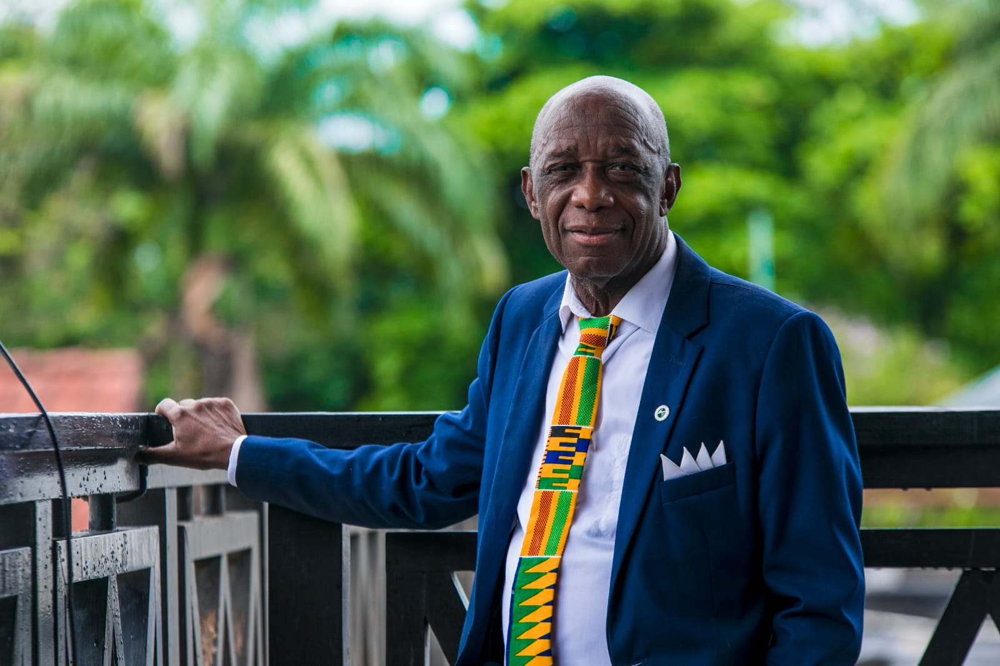

Dr. Thomas Mensah – Engenheiro

Dr. Thomas Mensah (1950–2024) foi um engenheiro químico ganês-americano e inventor, pioneiro no desenvolvimento da fibra óptica. Ele registrou 14 patentes e foi introduzido na Academia Nacional de Inventores dos EUA em 2015.
Principais Contribuições
- Desenvolveu métodos para a fabricação de fibra óptica, aumentando a velocidade de produção de 2 para 20 metros por segundo.
- Contribuiu para avanços na nanotecnologia e materiais aeroespaciais.
- Recebeu prêmios e homenagens por sua contribuição na tecnologia de telecomunicações.
Saiba mais